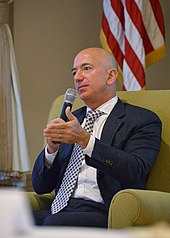

Jeffrey Bezos
Jeffrey Preston Bezos(/ˈbeɪzoʊs/ BAY-zohss;[1] né Jorgensen; born January 12, 1964)is an American entrepreneur, media proprietor, investor, and computer engineer. He is the founder and executive chairman of Amazon, where he previously served as the president and CEO.

Mail.ru
In September 2021, Bezos co-founded Altos Labs with Mail.ru founder Yuri Milner. Altos Labs is a generously-funded biotechnology company dedicated to harnessing cellular reprogramming to develop longevity therapeutics.
- List of Princeton University alumni
- List of richest Americans in history
- List of Time Person of the Year recipients
- The World's Billionaires